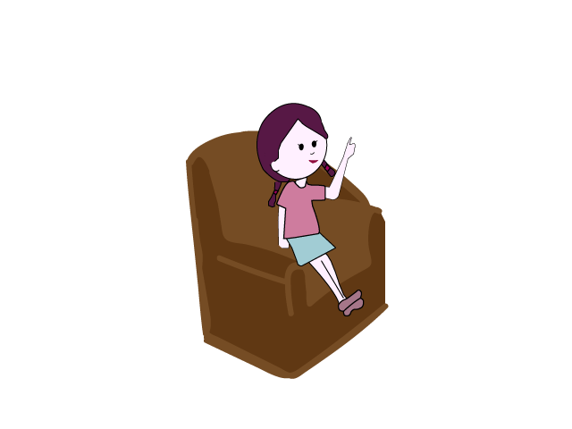

Al día de hoy, muchas mujeres sufren discriminación en las áreas STEM.
Menos del 30% de los investigadores del mundo en las áreas de ciencia, tecnología, ingeniería y matemáticas son mujeres, según datos de la Organización de las Naciones Unidas para la Educación, Ciencia y la Cultura
Esto se debe a los roles de género que aún existen
Derribar los estereotipos de género que vinculan la ciencia con la masculinidad y a brindar a las generaciones jóvenes ejemplos positivos de acuerdo con Phumzile Mlambo-NgCuka, directora de ONU mujeres

A pesar de esto, muchas mujeres se empoderaron y han hecho grandes aportes a la ciencia, ingeniería y tecnología
Sin sus inventos nuestra vida sería completamente diferente

En América Latina, el 45% de los investigadores son mujeres de acuerdo con la UNESCO
Universidades y centros de investigación se han dado la tarea de crear políticas y reglamentaciones para prevenir la violencia y discriminación por género

La Asamblea General de las Naciones Unidas declaró el 11 de febrero como el Día Internacional de la Mujer y la Niña en la Ciencia
Esto con el objetivo de demostrar el vínculo de 2 cuestiones clave y transversales en la agenda global.

Hay estudios que señalan que las niñas presentan interés en la ciencia a edades tempranas, al igual que los niños
Sin embargo, hay gente que justifica que las mujeres sólo se podrían desarrollar en áreas como en la enfermería, puesto que tiene que ver con el cuidado o mejor en ciencias sociales o de humanidades, por lo tanto pierden la motivación en áreas STEM.

La igualdad de género se encuentra en los derechos humanos y valores de las Naciones Unidas
Desde las políticas públicas que abordan aspectos culturales, sociales y económicos hasta las políticas de ciencia y tecnología deben orientarse con la perspectiva de género.

Hipatia
¡Es una de las primeras científicas! Fue una prestigiosa maestra neoplatónica que contribuyó a la ciencia en las matemáticas y astronomía, de hecho, fue la primera en plantear el Heliocentrismo.

Ada Lovelace
¡Madre de la programación! Fue una matemática británica. Primera en considerar el concepto de sistema operativo o software, mientras que tradujo y criticó una forma temprana de ordenador.
Hedy Lamarr
¡Inspiración para el WiFi! Fue una actriz e inventora austriaca que sentó las bases para el GPS y Wi-Fi modernos. Hoy un descendiente de esta tecnología ayuda a los conductores a navegar y desplazarse.
Ángela Ruiz Robles
¡Precursora del eBook! Fue una maestra, escritora e inventora española que patentó la primera propuesta de enciclopedia mecánica llamado "Procedimiento mecánico, eléctrico y a presión de aire para lectura de libros".

Margaret Hamilton
¡Pionera de la programación! Ingeniera de software líder de la NASA para el software de vuelo del Programa Apollo. Directora de la División de Ingiería de Software del MIT, su equipo desarrolló el software para el Apollo y Skylab.
Margaret Lindsay Huggins
¡Impulsora de la espectroscopía! Fue una investigadora científica y astrónoma británica irlandesa. Junto con su esposo fue pionera en el campo de espectroscopía y coautora del "Atlas of Representativa Stellar Spectra".
Carol Shaw
¡Primera mujer diseñadora de videojuegos! Ingeniera e informática estadounidense responsable del diseño y creación de los videojuegos Polo y River Raid.

Diana Trujillo
¡La colombiana que hizo que la NASA llegara a Marte! Ingeniera aeroespacial colombiana, líder de la misión Curiosity de la NASA. Actualmente lidera el equipo de ingenieros en el Laboratorio de Propulsión a Chorro que está a cargo del brazo robótico del rover Perseverance.

Jedidah Isler
¡Doctora que creó The Search Foundation! Es la primera mujer afroamericana Doctora en Física. Estudia los Blazares, agujeros negros supermasivos hiperactivos. Además, lucha para que las mujeres tengan su hueco en las STEM.
Nuestra Solución
